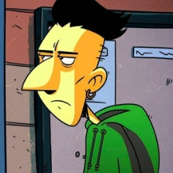

Poster y Vídeo

| Nombre | Foto | Descripción |
| Zero | Es el protagonista principal y el que narrará todo desde su punto de vista, bastante irónico típico caso de persona que confunde pesimismo con realismo. | |
|  | Mejor amigo de Zero y de Sarah, estoico, despreocupado de la vida y en general algo tonto pero buena persona. | |
| Sarah | Amiga de Zero y Seco, es la que se encarga de poner los pies en la tierra de Zero, buen corazón y centrada en su sueño de volverse maestra. |